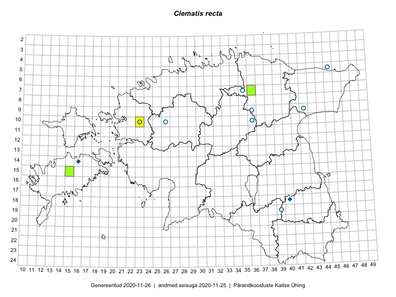

Clematis recta — püst-elulõng
Ranunculaceae :: Clematis recta L. (19)

Kaart põhineb 19 kirjel:
vaatlusi 3
herbaareksemplare 16
Taime kaasaegsed ja ajaloolised leiukohad asuvad 12 ruudus.
Tingmärgid ja ruutude arvud periooditi (U1 / V2 )
█ 2006–2020 (3/–)
◆/◇ 1971–2005 (2/1)
○ 1921–1970 (8/0)
+ kuni 1920 (0/0)
× hävinud (–/0)
? kaheldav (–/0)
| Ruut | Leidja(d) | Leiuaeg | Kirje |
|---|---|---|---|
| 18-40 | Malle Leht | 1998 | ruut/ala: Clematis recta L. |
| 14-16 | Heljo Krall, Tiiu Kull, Kalevi Kull, Vilma Kuusk, Maria Abakumova, Linda Viljasoo, A. Saare | 1984-06-28–1985-08-06 | ruut/ala: Clematis recta L. |
| 10-23 | Tõnu Ploompuu, Sirje Lagle | 2015-05-15 | ruut/ala: Clematis recta L. |
| 09-42 | Maret Kask | 1963-06-29 | TAA0094323: Clematis recta L. |
| 09-42 | Maret Kask | 1963-06-29 | TAA0094324: Clematis recta L. |
| 09-36 | Maret Kask | 1956-08-02 | TAA0094325: Clematis recta L. |
| 05-45 | Visolde Puusepp | 1961-06-14 | TAA0094328: Clematis recta L. |
| 05-45 | Visolde Puusepp | 1961-06-14 | TAA0094329: Clematis recta L. |
| 10-36 | Peeter Põldmaa | 1955-08-22 | TAA0094330: Clematis recta L. |
| 19-39 | Silvia Talts, Linda Viljasoo | 1960-06-23 | TAA0094331: Clematis recta L. |
| 19-39 | Silvia Talts, Linda Viljasoo | 1960-06-23 | TAA0094332: Clematis recta L. |
| 14-16 | Kalevi Kull | 1984-06-28 | TAA0094333: Clematis recta L. |
| 10-23 | Visolde Puusepp | 1963-08-01 | TAA0094335: Clematis recta L. |
| 10-26 | Gustav Vilbaste | 1933-06-28 | TAA0094336: Clematis recta L. |
| 07-35 | 1937-07 | TAA0094337: Clematis recta L. | |
| 15-15 | Kalle Kõllamaa | 2014-06-27 | TALL A010434: Clematis recta L. |
| 07-36 | Elle Rajandu, Karin Kikas | 2016-06-27 | TAA0143061: Clematis recta L. |
| 07-36 | Ott Luuk, Jaak-Albert Metsoja | 2019-08-05 | TAA0152361: Clematis recta L. |
| 07-36 | Ott Luuk, Jaak-Albert Metsoja | 2019-08-05 | TAA0152362: Clematis recta L. |
Ruutude arv uue atlase andmekogu järgi. Muuhulgas arvestab vanemat herbaariumi, 2005. aasta atlase välitöölehtedelt uuesti digitaliseeritud andmeid jne. Uue atlase andmekogust pärinevad andmed on kaardile kantud siniste sümbolitega.↩︎
Ruutude arv 2005. aasta atlase (Kukk, T., Kull, T., Eesti taimede levikuatlas. Eesti Maaülikool, Põllumajandus- ja Keskkonnainstituut, Tartu, 2005) järgi. Andmeallikana on kasutatud levik.exe programmi, kus igas ruudus on registreeritud vaid uusim leid. Seetõttu on vanemate perioodide kohta andmed puudulikud. Kasutatud levik.exe andmestikus leidub mõningaid kõrvalekaldeid atlase trükis ilmunud versioonist, sagedamini tarnade ja käpaliste seas. Lisaks leidub selles andmestikus valik liike (peamiselt väheste leidudega tulnuktaimed), mille kaarte trükis ei avaldatud. Vana atlase andmed ruutudest, milles ei ole uue atlase andmekogus leide enne 2006. aastat, on kaardil esitatud punaste sümbolitega. Vana atlase andmetel hävinud ja kaheldavaid leiukohti pole hilisemate (taas)leidude põhjal korrigeeritud.↩︎